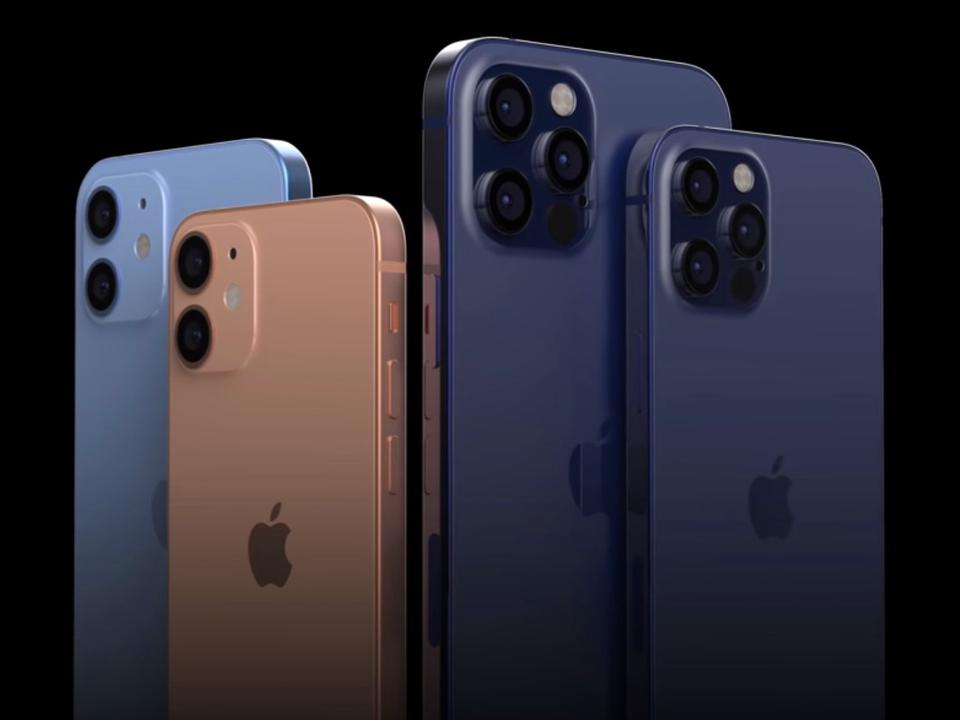

ProRaw: See how Apple's new iOS 14.3 trick transformed my iPhone 12 photos
With the addition of ProRaw in iOS 14.3, the iPhone 12 Pro and 12 Pro Max truly earn their "pro" designation.
By Danny
With the addition of ProRaw in iOS 14.3, the iPhone 12 Pro and 12 Pro Max truly earn their "pro" designation.
By Danny
With the release of iOS 14.3, the iPhone 12 Pro and 12 Pro Max get Apple's new raw photo format called ProRaw. The new file lets you have the customization of a raw file built atop the iPhone's computational photo smarts. For the past few weeks, I've been testing out the new feature and I'm impressed at how ProRaw transformed my phone photography. ProRaw is as significant a camera addition as the faster aperture lens Apple added to the main cameras on the iPhone 12 family and the new sensor-based stabilization found on the iPhone 12 Pro Max.
Shooting RAW photos on an iPhone is nothing new; for some time now, apps like Halide and Adobe Lightroom have let you capture all of the data the iPhone’s sensor can gather. And all of the usual benefits of RAW are here with ProRAW — vastly improved control over white balance is always the biggest factor for me — but it gives you greater leeway with adjusting exposure, sharpness, dynamic range, and more. You can make better adjustments to facial tone in a portrait or nail the exposure in a landscape shot.
 Image source: AppleI’ve been trying out ProRAW on my iPhone 12 Pro Max over the last few days, and I’m already appreciating the difference it can make. It’s just plain easier to get the most from a photo — retrieve highlights, boost shadows, fix the white balance, etc. — if you’re willing to put in the work of editing after the fact.